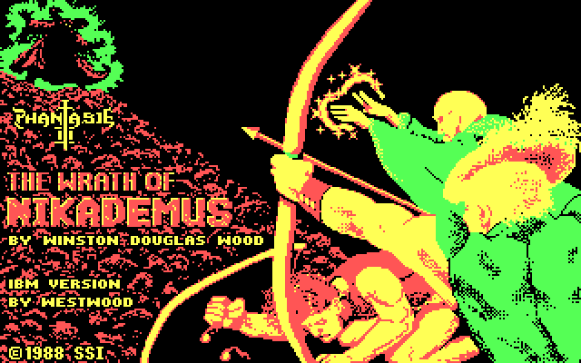
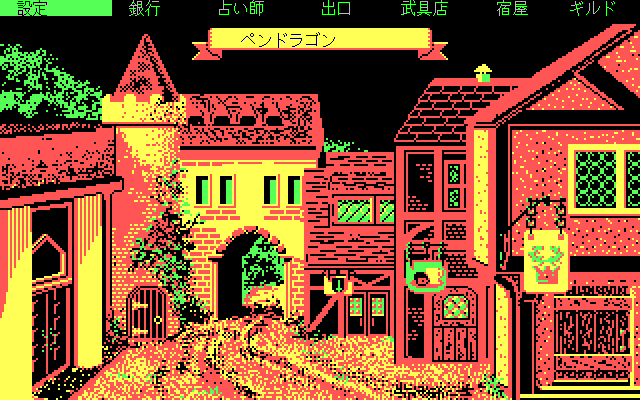
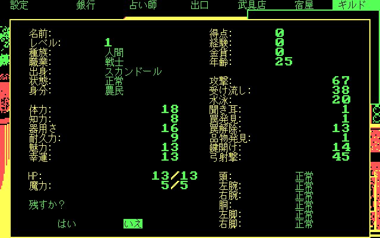
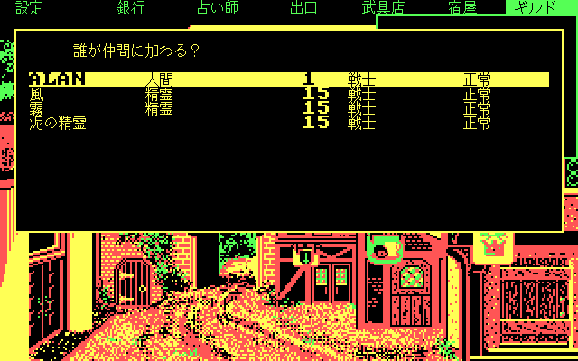
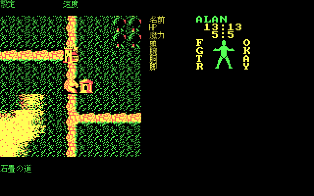
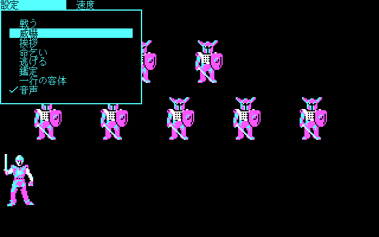
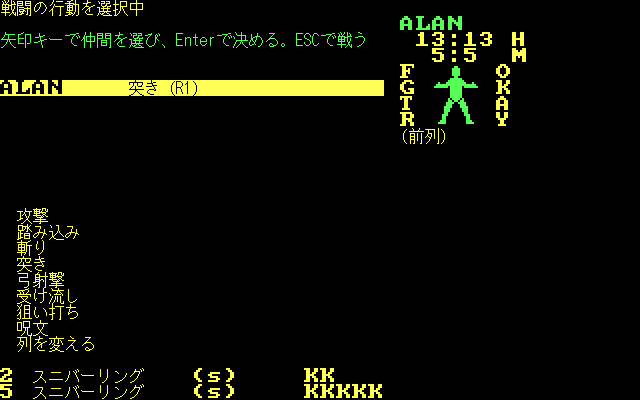

どんなゲーム？
ファンタジーIIIは、1987年に SSI が発売した三部作の完結編です。DOS 版はウエストウッドが移植しました。
二度の敗北を喫したニカデマスは、全軍を率いて北の大陸スカンドールへ進軍します。一行は賢者フィルモンに導かれ、ウッド卿とともに、善と悪の最後の戦いへ向かいます。
戦闘には隊列が加わり、頭・胴・腕・脚の部位ごとに傷を負います。身分や弓での攻撃も加わっています。
Phantasie III: The Wrath of Nikademus
GOG.com 版「Phantasie Memorial Set」に収録された DOS 版の「Phantasie III: The Wrath of Nikademus」を日本語で遊べるようにする、非公式のファンメイドパッチです。 できごとの文、人物のせりふ、巻物、戦闘の知らせ、町の施設、キャラクター作成、呪文・品物・怪物の名前、メニューまで、ゲームの中の文章を日本語で表示します。 ゲームのフォルダにファイルを置くだけで日本語になり、消せば英語に戻ります。
ファンタジーIIIは、1987年に SSI が発売した三部作の完結編です。DOS 版はウエストウッドが移植しました。
二度の敗北を喫したニカデマスは、全軍を率いて北の大陸スカンドールへ進軍します。一行は賢者フィルモンに導かれ、ウッド卿とともに、善と悪の最後の戦いへ向かいます。
戦闘には隊列が加わり、頭・胴・腕・脚の部位ごとに傷を負います。身分や弓での攻撃も加わっています。







Phantasie_JP.zip の中身を、ゲームのフォルダ（Phantasie 1・Phantasie 2・Phantasie 3 の三つのフォルダがある場所）にそのまま展開します。Phantasie 3\DOSBOX\winmm.dll が増えれば、この作品は日本語になります。元からあるファイルは上書きしません。Phantasie 3\DOSBOX\winmm.dll を消します。セーブデータは英語版と共通です。日本語版と英語版を行き来しても、続きから遊べます。
Phantasie 3\MANUAL にあります。DOSBox.exe のプロパティの「互換性」に設定がないか確かめ、あれば外してください。誤訳や不自然な訳に気づいたら、GitHub の Issues で教えてください。